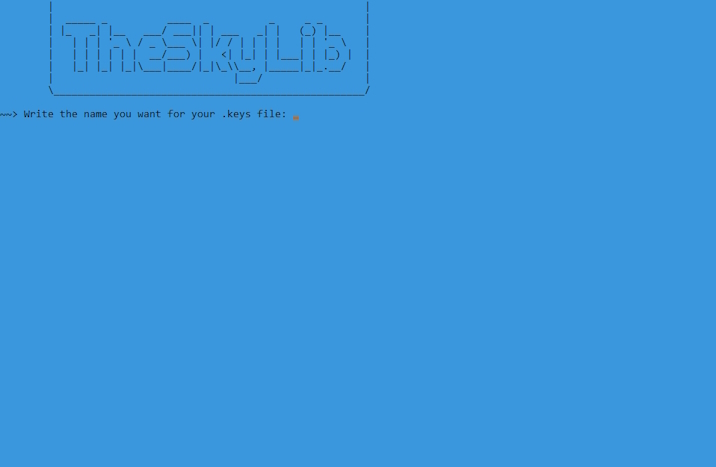

Runes (NefariousTechSupport)
Riches (Texthead)
Skylanders GUI Tool (Pyrofer)

TheSkyLib (DevZillion)
SkyScripts
SkyUID Generator
Mifare Magic Card Identifier
Works with ACR122U
Mifare 1K Magic UID Reset
Works with ACR122U